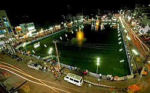

বরিশাল/BARISAL
বাইতুল আমান জামে মসজিদ
বাইতুল আমান জামে মসজিদ (এছাড়াও গুঠিয়া মসজিদ নামেও পরিচিত) বাংলাদেশের বরিশাল জেলায় অবস্থিত।
এখানে ২০ হাজার অধিক ধারণ ক্ষমতা সম্পন্ন ঈদগাহ্ ময়দান রয়েছে। চাংগুরিয়া গ্রামের ব্যবসায়ী এস সরফুদ্দিন
আহমেদ এটির নির্মাণ ব্যয় বহন করেন। কমপ্লেক্সের মূল প্রবেশপথের ডানে বড় পুকুর। পুকুরের পশ্চিম দিকে
মসজিদ অবস্থিত এবং এর মিনারটির উচ্চতা প্রায় ১৯৩ ফুট।
অশ্বিনীকুমার টাউন হল
অশ্বিনীকুমার টাউন হল হলো বাংলাদেশের বরিশাল শহরের প্রধান গণজমায়েত স্থল ও শহরের সাংস্কৃতিক প্রাণ
কেন্দ্র যা পর্যটক আকর্ষক কেন্দ্র হিসাবেও সারাদেশে সুবিদিত। শহরের মূল সড়ক সদর রোডে অবস্থিত এই
স্থানটিতেই বিভিন্ন ধরনের সভা, সেমিনার, নাটক, মেলা ও মৌসুমী অনুষ্ঠানের আয়োজন করা হয়ে থাকে।
কীর্তনখোলা নদী
কীর্তনখোলা নদী বাংলাদেশের দক্ষিণ-পশ্চিমাঞ্চলের বরিশাল এবং ঝালকাঠি জেলার একটি নদী। নদীটির দৈর্ঘ্য
১৬০ কিলোমিটার, গড় প্রস্থ ৪৯৭ মিটার এবং প্রকৃতি সর্পিলাকার। বাংলাদেশ পানি উন্নয়ন বোর্ড বা "পাউবো"
কর্তৃক কীর্তনখোলা নদীর প্রদত্ত পরিচিতি নম্বর দক্ষিণ-পশ্চিমাঞ্চলের নদী নং ২১। এই নদীর তীরে বরিশাল শহর
অবস্থিত।
ব্রজমোহন কলেজ
ব্রজমোহন কলেজ বা বি.এম কলেজ বাংলাদেশের অন্যতম শীর্ষস্থানীয় ও প্রাচীন ঐতিহ্যবাহী শিক্ষা প্রতিষ্ঠান।
এটি বাংলাদেশের দক্ষিণাংশে বরিশাল শহরে অবস্থিত। ১৮৮৯ সালে প্রখ্যাত সমাজসেবক, রাজনীতিবিদ ও
শিক্ষানুরাগী অশ্বিনীকুমার দত্ত কলেজটি প্রতিষ্ঠা করেন।
অক্সফোর্ড মিশন এপিফানী গির্জা
এপিফ্যানি গির্জা বা অক্সফোর্ড মিশন চার্চ দক্ষিণ এশিয়ার দ্বতিীয় বৃহত্তম এবং বাংলাদেশের সর্ববৃহৎ এবং শৈল্পিক
গির্জা। এর মুল নাম এপিফানী গির্জা হলেও স্থানীয় সাধারনের কাছে অক্সফোর্ড মিশন চার্চ নামেই বেশি পরিচিত।
বরিশাল সদরের প্রানকেন্দ্রে বগুড়া রোডের ধারে এর অবস্থান। ১১৩ বছর পুরনো দৃষ্টিনন্দন এ গির্জাটি ‘লাল গির্জা’
নামেও পরিচিত।
বিবির পুকুর

বিবির পুকুর বাংলাদেশের বরিশাল নগরীর প্রাণকেন্দ্রে অবস্থিত একটি শতবর্ষের পুরানো ও ঐতিহ্যবাহী কৃত্রিম জলাশয়।
১৯০৮ খ্রিস্টাব্দে উইলিয়াম কেরির পালিত সন্তান জিন্নাত বিবির উদ্যোগে জনগণের জলকষ্ট নিরসনের জন্য নগরীর সদর
রোডের পূর্ব পাশে ৪০০ ফুট দৈর্ঘ্য ও ১৮৫০ ফুট প্রস্থ একটি পুকুর খনন করা হয়। পরবর্তীতে এটি তার নাম অনুসারে
"বিবির পুকুর" নামে পরিচিতি লাভ করে। বাংলাদেশের অন্য কোন বিভাগীয় শহরের প্রাণকেন্দ্রে এরকম জলাশয় নেই
এবং এটি বরিশাল নগরীর অন্যতম সৌন্দর্য ও ঐতিহ্য বলে বিবেচিত হয়।
Add more historical place details soon